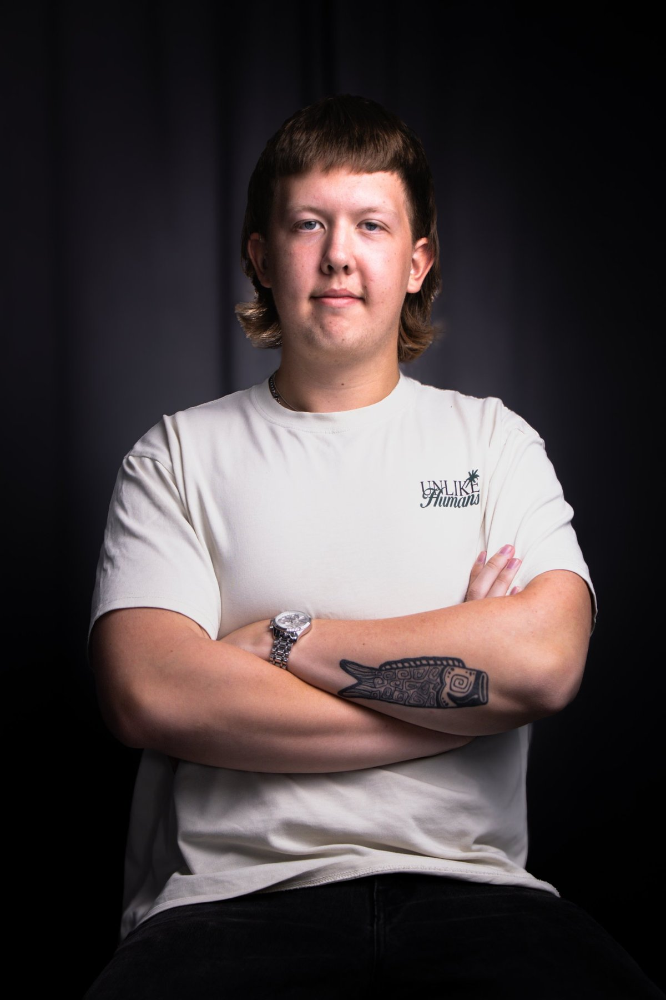

Portrait placeholderassets/images/about/noah-portrait.jpg
Noah Edlund
Fotograf och filmare från Hälsingland.
Jag fotar och filmar människor, platser och situationer som inte är tillrättalagda. Det som händer framför kameran intresserar mig mer än det jag kan arrangera, och en bild ska säga något, inte bara vara tekniskt rätt.
Hälsingland är min hembygd och en stor del av det jag gör. Jag fotar både digitalt och analogt, och film och mellanformat är ett stort intresse. Jag gillar mörka miljöer, befintligt ljus och platser med karaktär.
Jag vill göra mer dokumentärt arbete: längre berättelser om människor och samhälle, musik och egna projekt. Vid sidan av det tar jag uppdrag: porträtt, event, konserter och film.
Tillgänglig för uppdrag.
Vad jag gör
Foto
Event, porträtt och livemusik.
Film
Eventfilmer, dokumentär och filmer åt företag.
Egna projekt
Gatufoto, gatuporträtt, life on film och dokumentär.
Erfarenhet
Beaparachute
2026–nuFoto, videoproduktion och visuellt marknadsföringsmaterial, bland annat informationsmaterial och kreativt innehåll. Jag jobbar också med försäljning mot företag, föreningar och klasser.
Frilansfotograf
2026–nuPorträtt, event och fotouppdrag åt lokala företag och andra. Jag vill gärna jobba med artister, musiker, DJs, företag och arrangörer.
Järvsöfoto UF
2025–2026Drev mitt eget UF-företag inom foto och video: jobbade med kunder och utvecklade ett eget visuellt uttryck.
JärvsöLAN
2025Kommunikation, foto och videoproduktion i samband med eventet.
Utbildning
Järvsögymnasiet
2023–2026Estetiska programmet, inriktning media. Tog studenten 2026.
Utrustning
Digitalt
Canon M50, Sigma 30mm f/1.4
Analogt
Mamiya RB67, Canon AE-1, Yashica-C
Senast
Min dokumentär finns på videosidan.
Anlita mig
Jag utgår från Hälsingland men tar uppdrag på andra orter också: porträtt, event, konserter och film. Plats, omfattning och innehåll bestämmer vi innan bokning. Pris efter förfrågan. Jag skriver på svenska och engelska.